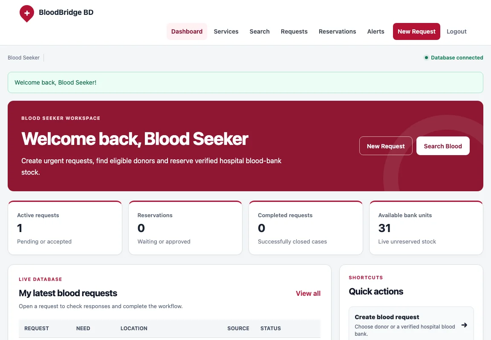

Prostuti · Admission OMR
A Bangla OMR practice app for admission candidates in Bangladesh, with timed 100-question sessions and saved attempt history.
Cloudflare WorkersTimed practice
02 // PROJECTS
Live web apps, software prototypes, and academic projects.
A Bangla OMR practice app for admission candidates in Bangladesh, with timed 100-question sessions and saved attempt history.
The event website for the 2026 New Government Degree College reunion.
An academic planner for UIU students to explore course choices and costs.
Smart EV Charging Network and Management System for Bangladesh
A reservation concept connecting EV drivers with station availability, time-slot booking, and an operator-facing workflow.
Tech stack & scope
Compare example stations and hold an available slot in this simulation.

A donation workflow for screening, collection, and staff reporting. I fixed the direct-donation card layout in its PHP interface.
Tech stack

A learning prototype with progress tracking and originality checks. I integrated the guard that detects copied reference solutions before tests run.
Tech stack
A Java city-builder prototype structured around reusable game objects. I helped plan the program architecture and data handling.
Tech stack